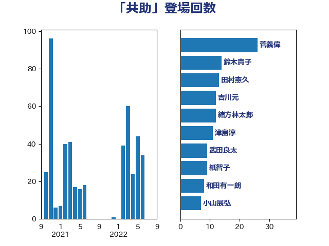

単語「共助」

| 菅義偉 | 自由民主党 | 26 回 |
| 鈴木貴子 | 自由民主党 | 14 回 |
| 田村憲久 | 自由民主党 | 13 回 |
| 吉川元 | 立憲民主党 | 12 回 |
| 緒方林太郎 | 無所属 | 12 回 |
| 津島淳 | 自由民主党 | 11 回 |
| 武田良太 | 自由民主党 | 9 回 |
| 紙智子 | 日本共産党 | 9 回 |
| 和田有一朗 | 日本維新の会 | 8 回 |
| 小山展弘 | 立憲民主党 | 7 回 |
| 泉健太 | 立憲民主党 | 7 回 |
| 熊谷裕人 | 立憲民主党 | 7 回 |
| 坂本哲志 | 自由民主党 | 6 回 |
| 城内実 | 自由民主党 | 6 回 |
| 室井邦彦 | 日本維新の会 | 6 回 |
| 市村浩一郎 | 日本維新の会 | 6 回 |
| 林芳正 | 自由民主党 | 6 回 |
| 渡辺周 | 立憲民主党 | 6 回 |
| 羽田次郎 | 立憲民主党 | 6 回 |
| 吉田宣弘 | 公明党 | 5 回 |
| 宮本徹 | 日本共産党 | 5 回 |
| 磯崎仁彦 | 自由民主党 | 5 回 |
| 馬場成志 | 自由民主党 | 5 回 |
| 東徹 | 日本維新の会 | 4 回 |
| 野田聖子 | 自由民主党 | 4 回 |
| 上野通子 | 自由民主党 | 3 回 |
| 中西祐介 | 自由民主党 | 3 回 |
| 伊佐進一 | 公明党 | 3 回 |
| 小宮山泰子 | 立憲民主党 | 3 回 |
| 小田原潔 | 自由民主党 | 3 回 |
| 浜田聡 | NHK党 | 3 回 |
| 猪口邦子 | 自由民主党 | 3 回 |
| 竹内譲 | 公明党 | 3 回 |
| 細田博之 | 自由民主党 | 3 回 |
| 芳賀道也 | 国民民主党 | 3 回 |
| 金子恭之 | 自由民主党 | 3 回 |
| 青山大人 | 立憲民主党 | 3 回 |
| 一谷勇一郎 | 日本維新の会 | 2 回 |
| 上田清司 | 国民民主党 | 2 回 |
| 加藤勝信 | 自由民主党 | 2 回 |
| 和田政宗 | 自由民主党 | 2 回 |
| 大野敬太郎 | 自由民主党 | 2 回 |
| 宮路拓馬 | 自由民主党 | 2 回 |
| 小池晃 | 日本共産党 | 2 回 |
| 小泉進次郎 | 自由民主党 | 2 回 |
| 小渕優子 | 自由民主党 | 2 回 |
| 小西洋之 | 立憲民主党 | 2 回 |
| 山下芳生 | 日本共産党 | 2 回 |
| 枝野幸男 | 立憲民主党 | 2 回 |
| 沢田良 | 日本維新の会 | 2 回 |
| 田名部匡代 | 立憲民主党 | 2 回 |
| 福田達夫 | 自由民主党 | 2 回 |
| 若松謙維 | 公明党 | 2 回 |
| 赤羽一嘉 | 公明党 | 2 回 |
| 近藤和也 | 立憲民主党 | 2 回 |
| 高橋光男 | 公明党 | 2 回 |
| 下野六太 | 公明党 | 1 回 |
| 世耕弘成 | 自由民主党 | 1 回 |
| 伊藤孝恵 | 国民民主党 | 1 回 |
| 古屋範子 | 公明党 | 1 回 |
| 古川禎久 | 自由民主党 | 1 回 |
| 古賀之士 | 立憲民主党 | 1 回 |
| 塩崎彰久 | 自由民主党 | 1 回 |
| 塩田博昭 | 公明党 | 1 回 |
| 安江伸夫 | 公明党 | 1 回 |
| 山添拓 | 日本共産党 | 1 回 |
| 岡本三成 | 公明党 | 1 回 |
| 志位和夫 | 日本共産党 | 1 回 |
| 打越さく良 | 立憲民主党 | 1 回 |
| 櫻井周 | 立憲民主党 | 1 回 |
| 武井俊輔 | 自由民主党 | 1 回 |
| 河西宏一 | 公明党 | 1 回 |
| 源馬謙太郎 | 立憲民主党 | 1 回 |
| 田島麻衣子 | 立憲民主党 | 1 回 |
| 田嶋要 | 立憲民主党 | 1 回 |
| 田村まみ | 国民民主党 | 1 回 |
| 矢倉克夫 | 公明党 | 1 回 |
| 石橋通宏 | 立憲民主党 | 1 回 |
| 石田昌宏 | 自由民主党 | 1 回 |
| 神田憲次 | 自由民主党 | 1 回 |
| 福山哲郎 | 立憲民主党 | 1 回 |
| 稲富修二 | 立憲民主党 | 1 回 |
| 竹内真二 | 公明党 | 1 回 |
| 羽生田俊 | 自由民主党 | 1 回 |
| 西野太亮 | 自由民主党 | 1 回 |
| 赤澤亮正 | 自由民主党 | 1 回 |
| 足立敏之 | 自由民主党 | 1 回 |
| 遠藤敬 | 日本維新の会 | 1 回 |
| 野中厚 | 自由民主党 | 1 回 |
| 金城泰邦 | 公明党 | 1 回 |
| 鈴木宗男 | 日本維新の会 | 1 回 |
| 長峯誠 | 自由民主党 | 1 回 |
| 長浜博行 | 無所属 | 1 回 |
| 高野光二郎 | 自由民主党 | 1 回 |